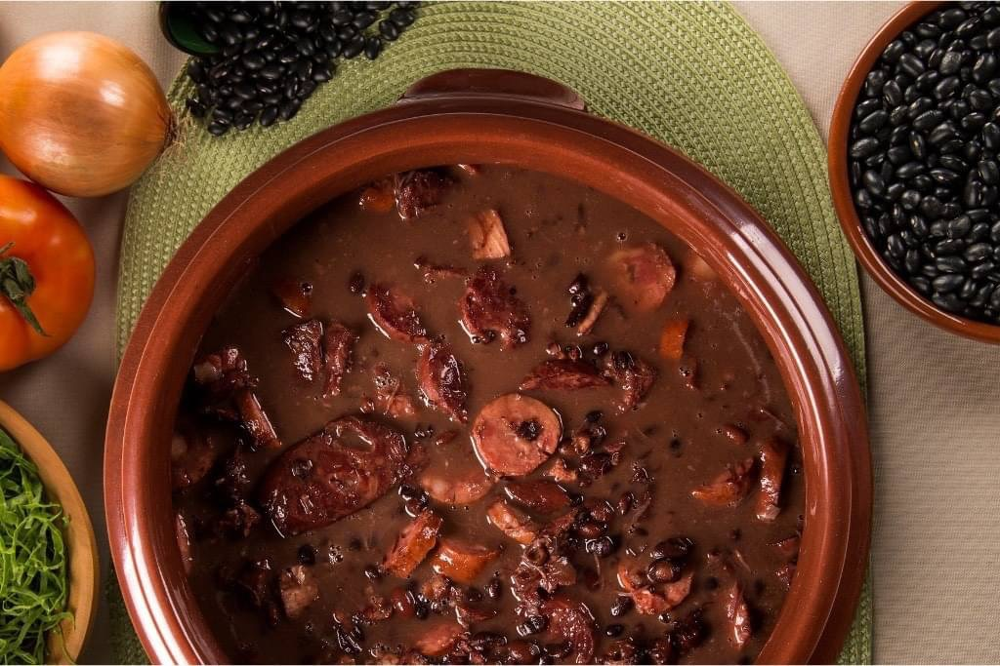

コシンヤ
材料
- 鶏胸肉 370g
- オリーブオイル 適量
- ニンニク 4 片
- みじん切り玉ねぎ 大さじ4
- 塩 適量
- 胡椒 適量
- トマトソース 70g
- サワークリーム 40g
- みじん切りパセリ 適量
- 胡椒 適量
- 牛乳 500ml
- 無塩バター 40g
- 塩 適量
- 胡椒 適量
- 小麦粉 200g
- みじん切りパセリ 適量
- 牛乳 300ml
- パン粉 400g
- 揚げ物用油量
作り方:詰め物
1: 鍋に水を入れ、鶏胸肉を30分間中火で茹でる。2:火が通った鶏胸肉をお皿に移してから、ほぐしましょう。3:熱した鍋にみじん切りにしたニンニクと玉ねぎを入れ、きつね色になるまで炒める。4:③にほぐした鶏胸肉を加えて、良く混ぜる。5:塩胡椒とトマトソースを加える。6:鶏胸肉を茹でた水少量とサワークリームを加え、3分間炒める。7:火を止め、みじん切りにしたパセリを加える
作り方:生地
1:中火に熱した鍋に牛乳500mlを入れ、無塩バター、塩胡椒とみじん切りパセリを加える。2:沸騰したら、小麦粉を加え、綺麗な生地になり、鍋にくっ付かなくなるまで、6分間炒めながら混ぜましょう。3:鍋から生地を平な台の上へ移し、粗熱が取れたら、手で3分こねる。
作り方:生地
1:中火に熱した鍋に牛乳500mlを入れ、無塩バター、塩胡椒とみじん切りパセリを加える。2:沸騰したら、小麦粉を加え、綺麗な生地になり、鍋にくっ付かなくなるまで、6分間炒めながら混ぜましょう。3:鍋から生地を平な台の上へ移し、粗熱が取れたら、手で3分こねる。
作り方:
1:125gの生地を手にとり、円型に広げる。2:50gの鶏胸肉を円型に広げた生地の中に入れ、包み、鶏胸肉の入った生地を雫型に整える。3:雫型の生地を牛乳とパン粉につけ、180℃の揚げ物油できつね色になるまで揚げる。4:クッキングペーパーで余分な油がとり、完全。
フェイジョアーダ
フェイジョアーダは、黒豆とお肉を煮込んだブラジルの代表的な料理です。伝統的な作り方では、牛肉のほか、足、耳やしっぽなどの豚肉の部位が使われています。黒い見た目によらず意外とクリーミーでまろやかな味わいが楽しめる一品！ 今回は、日本でも簡単に作れるレシピをご紹介します。
材料
- ブラックビーンズ 1kg
- 角切り干し肉 500g
- ピリ辛生ソーセージ 500g
- 豚スペアリブの燻製 500g
- 角切りベーコン 300g
- みじん切り玉ねぎ 1個
- みじん切りニンニク 4片
- みじん切りイタリアンパセリ 適量
- ローレル 3枚
- 胡椒 適量
- 塩 お好み
- オリーブオイル
- お湯
作り方
1:前日に干し肉を水に浸しておきましょう。5時間毎に水を変え、翌日までそのままに。ブラックビーンズも同じように水に浸しておきましょう。12時間くらいで大丈夫です。2:ブラックビーンズが浸ったいた水を捨て、ブラックビーンズを圧力鍋へ。 ビーンズが浸すくらいにお湯を注ぎ、蓋をしてシュー、と音がしたら弱火にし、20分間煮込みます。3:別の大きな鍋でベーコンを焼いていきましょう。きつね色になってきたら、みじん切りにした玉ねぎとニンニクを加えます。4:圧力鍋でブラックビーンズが煮詰まれば、蓋を外し、おたまでブラックビーンズの豆だけを少量ボウルへ移して、わけておきましょう。圧力鍋に残った分を注意しながら、ベーコンの入った鍋へとおたまで逸していきましょう。そこに干し肉、スペアリブに生ソーセージを加えます。5:個人のお好みでお湯を足して下さい。肉や豆が完全に柔らかくなるまで、約90分煮込みます。みじん切りにしたイタリアンパセリと胡椒を加えます。6:とろみをつける為に分けておいたビーンズをよく潰して鍋へと入れたら良く混ぜてもう少しだけ煮込みます。7:最後に味見をして、塩胡椒が足りてるかを確認したら完成です。
ブリガデイロ
ブリガデイロはブラジルのボンボン・ショコラです。 ブリガデイロは1940年代頃に創作され、現在では、誕生日パーティでは、欠かせないお菓子の一つです！ 誰でも簡単に作れるブラジルを体表するような菓子です。
材料
- 練乳 1缶
- チョコレートパウダー 大さじ3
- 無塩バター 大さじ1
- チョコスプレー 1カップ
ポイント
1:板チョコも入れる事でチョコ���が増え尚美味しくなります。2:使用するチョコレート、チョコレートパウダーは、ブラックがおすすめです。練乳が甘いので、苦みが強いチョコを使うとバランスがとれます。
カルネ・デ・パネラ

カルネ・デ・パネラは、ブラジルの家庭料理で、牛肉をキャッサバなどと一緒にトマトソースで煮込んで作る煮込み料理です。キャッサバの代わりにじゃがいもを使うケースも多く、シチューのような色合いですがとろみはなく、サラッとした煮込み料理です。
材料
- 牛肉ブロック 800g
- みじん切り玉ねぎ 1個
- じゃがいも 6個
- ニンジン 2本
- みじん切りニンニク 3片
- トマト缶 1缶
- ビール 1缶
- コンソメor鶏ガラ 大さじ2
- ローレル 1枚
- オリーブオイル 少々
- 塩 適量
- 胡椒 適量
- クミンパウダー 少々
- コリアンダーパウダー 少々
作り方
1:牛肉は、角切りに、玉ねぎとニンニクをみじん切り、ニンジンをくし形切り、じゃがいもを一口大に切る。2:圧力鍋にオリーブオイルと玉ねぎ、ニンニクを入れ、香りがたつまで炒める。3:食べやすい大きさにカットした牛肉を加え、肉の表面に色がついたら、ニンジンとローレルを加える。4:ビール1缶とトマトソース、を入れて煮込み、あくをとる。(水を加える場合もありますので、お持ちの鍋のサイズに合わせて下さい。)5:コンソメとAの材料を入れ、圧力鍋に蓋をし強火にする。シューと音がしたら、中火で20分間煮込みます。6:20分煮込めたら、十分注意しながら圧力鍋の蓋を開けます。じゃがいもを加え、もう一度蓋をし、強火で煮込みシュー、と音がしたら中火にし、10〜20分の間煮込み、完成です。(肉の柔らかさやじゃがいもの種類によって時間を調整しましょう。)
ポイント
1:クミンやコリアンダーは、入れなくでも大丈夫です。2:お好みで、ハチミツやメーブルシロップで甘さを出す事も可能です。3:水量は、肉が浸すくらいで大丈夫です。4:ベーコンを入れると味に深みがでます。5:トマト缶がなければ、トマトジュース700cc、または、トマト大を2〜3個を細かく切ったものを使うと良いです。6:ビールを加える事で肉が柔らかくなります。使わなくとも大丈夫です！お好みでビールの代わりに野菜だし汁でも美味しくなります。